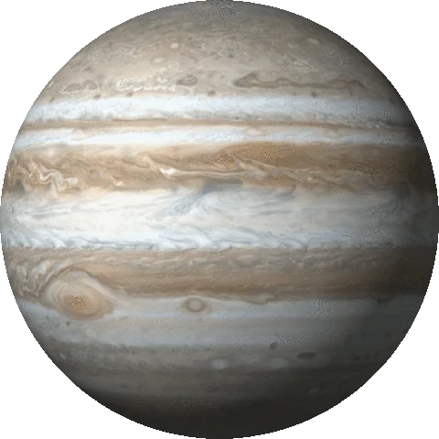

A Jupiter az ötödik bolygó a Naptól, és messze a legnagyobb bolygó a Naprendszerben. Óriásbolygó, tömege két és félszerese az összes többi bolygó együttes tömegének. A többi óriásbolygóval (Szaturnusz, Uránusz, Neptunusz) együtt gyakran Jupiter-típusú, vagy külső bolygóknak nevezik.
A Jupiter felső légköre atomszám szerint 93% hidrogénből és 7% héliumból áll, molekulaszám szerint 86% hidrogénből és 13% héliumból. Mivel a héliumatom négyszer nagyobb tömegű, mint a hidrogénatom, az összetétel változik, ha a tömegarányt nézzük. Ez alapján a légkör 75%-a hidrogén, 24%-a hélium, 1%-a más elem. A bolygó belseje sűrűbb anyagot tartalmaz, nagyjából 71% hidrogént, 24% héliumot és 5%-a más elemeket.
A Jupiter tömege messze a legnagyobb a Naprendszerben, 2,5-szer nagyobb, mint az összes többi bolygóé együttvéve. Bár a gázóriás sűrűsége jóval kisebb a Földének, a Jupiter mérete sokkal nagyobb (11-szer nagyobb az átmérője), így tömege majdnem 318-szor nagyobb, mint a Földé.
A Jupiter naptávolsága (a pálya fél nagytengelye) 778,57 millió km (5,20 CsE), (sziderikus) keringési ideje 4332,589 nap, azaz 11,862 év, ami a Szaturnusz keringési idejének kétötöde.[26] Az egyetlen bolygó, amelynek a Nappal való tömegközéppontja a csillagon kívül helyezkedik el, bár ez mindössze a Nap sugarának a 7%-ával van a felszín felett.[27] Napközelségben (perihélium) 740,52 millió km, míg naptávolban (aphélium) 816,62 millió km a Naptól való távolsága. A bolygópálya excentricitása 0,0489, inklinációja 1,304°.